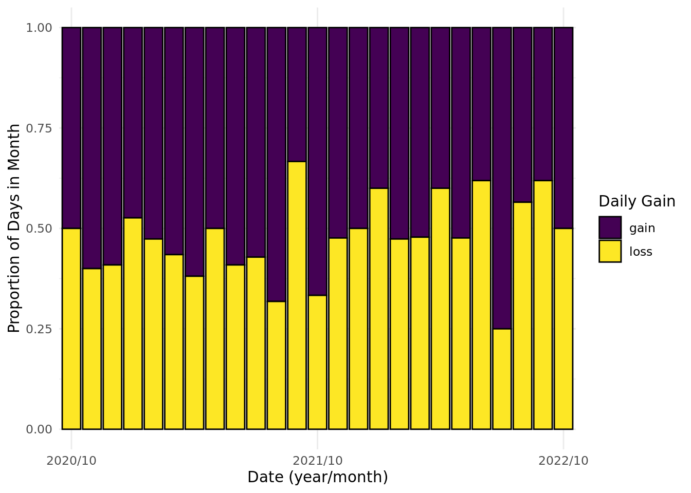
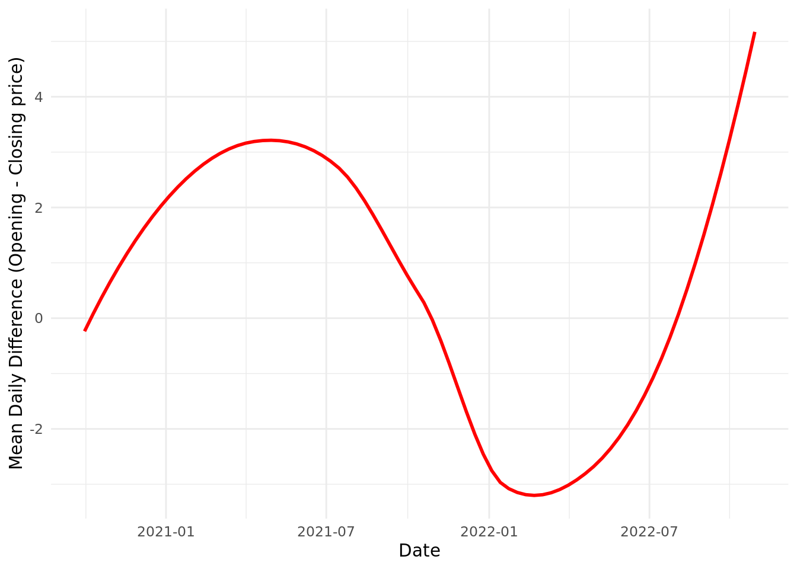

The Impacts of Inflation and Interest Rates on the Stock Market
Report
Introduction
We want to explore the relationship between interest and inflation rates and the performance of the stock market. In doing so, we hope to determine economic characteristics in which it’s beneficial to invest in the stock market, as well as if/when certain companies or sectors perform better in different economic climates. Therefore, we are interested in answering the following questions:
How have these rates (inflation and interest) historically impacted the returns of the stock market? How closely has the current performance of the market (the past two years) followed these historical trends?
And does the current high-rate economic climate disproportionately affect some companies/sectors more than others? If so, why?
For our historical analysis, we’ll utilize a data set that includes yearly averages for the federal funds rate, inflation rate, and the S&P 500’s return percentage from 1961 to 2020 in order to examine trends during this timeframe. For our current-day analysis, we’ll utilize a data set that details the S&P 500’s daily performance over the past two years to compare our historical findings with recent trends. Lastly, we have a data set that includes each company in the S&P 500 index, along with their sector and year-to-date performance, which we’ll use to examine whether certain companies/sectors have performed better as rates have risen throughout this year.
We believe the overall stock market would be hurt by high inflation and corresponding high interest rates, both because consumers’ discretionary incomes drop and because companies are disincentivized from borrowing, due to the higher costs associated with taking out a loan. We expect to see this relationship in both our historical analysis and our current-day analysis. Conversely, in times of lower rates, we expect market returns to be higher, on average. Though we expect the stock market as a whole to suffer from high rates, we believe certain sectors of the economy could serve as silver linings for investors’ pockets; these industries include: financials, health care, utilities, and consumer staples. We believe these sectors could perform better than the aggregate market because they sell essential goods that consumers must purchase no matter the state of the economy (health care, utilities, and consumer staples). Also, we believe the financials sector will do well because banks are able to charge higher interest rates on their loans (and thus earn greater profits) when interest rates are high.
Note: We are using the S&P 500 as a model of the performance of the entire market, and we are using the federal-funds rate, the interest rate at which banks loan to other banks, to model the general trend of all interest rates. We believed these are logical assumptions, as the S&P 500 includes the 500 largest US-based companies (and thus covers a large portion of the total market) and the federal-funds rate generally serves as a benchmark for all other interest rates (because it is indirectly influenced by the Federal Reserve’s policies). Also, all of our observations feature the performance of the market (S&P 500) or an individual company in the S&P 500 on a specific day/month/year.
Part 1: Historical vs. Current Analysis
We decided to look at the S&P 500’s Historical Performance in relation to inflation and interest rates, and compare that to data from recent years.
Sources for Historical Data:
Federal Funds Rate and Inflation Rate: Macrotrends (https://www.macrotrends.net/2015/fed-funds-rate-historical-chart)
S&P 500 Annual Returns: Slickcharts (https://www.slickcharts.com/sp500/returns)
Monthly Statistics (scraped): Official Data (https://www.officialdata.org/us/stocks/s-p-500/1900).
All of these sites collected these data by retrieving the data published publicly on stock exchanges, except for the federal-funds rate–this data was collected from the World Bank. In addition, each of these sites updates their data monthly/yearly (although they could update it daily, as they are collecting live data). Each observation represents a month in a year (between 1961 and 2020) and includes the following variables:
| Variable | Definition |
|---|---|
| year | year in which observation was recorded |
| month | month in which observation was recorded |
| monthly_return | total stock market’s monthly return |
| year_to_date_return | S&P 500’s yearly return |
| mean_fed_funds_rate | mean annual interest rate set by the Federal Reserve |
| inflation rate | mean annual inflation rate |
| decade | represents decade in which observation was made |
Here, we can get an overview of something the old data shows - how stock prices fluctuate with changes in interest and inflation.
Contextualization for Current Data: We're analyzing the time period of October 2020 through October 2022. This year, inflation has risen to ~8%, up from <2% in 2020 and <5% in 2021. Interest rates have steadily risen in tandem with this increase in inflation. In an attempt to slow down inflation, Federal Reserve has increased the discount rate (the rate at which banks are charged to borrow from the Federal Reserve) from 0.5% in March 2022 to a current rate of 4%, which is the highest it's been since the 2008 recession.
Source for Current Data:
- Investing.com (https://www.investing.com/indices/us-spx-500-historical-data)
Investing.com gets their data from financial-data providers, including stock exchanges and/or directly from market makers (who set stock prices to match supply and demand). The data is collected in real time by monitoring transactions (selling, buying, etc.) executed in the stock market, which correspond to increases/decreases in prices. Each observation represents a different day (between 1 October 2020 and 28 October 2022) and includes the following variables:
| Variable | Definition |
|---|---|
| date | day on which observation was recorded |
| price | closing daily price for the S&P 500 |
| open | opening daily price for the S&P 500 |
| daily_percentage_change | daily percentage difference between opening and closing prices |
| daily_diff | daily numerical difference between opening and closing prices |
| gain | “gain” if daily_diff > 0 (positive return for the day), else “loss” |
Part 2: Company and Sector Analysis
Contextualization: Because of high inflation rates, and rising interest rates, the stock market has taken a major blow this past year. However, some sectors and stocks have been more negatively affected than others. We believe that industries that are considered more essential tend to be less affected by fluctuations in these rates. So how true is this, and how much are both of these categories affected? In this section, we’re analyzing data from the beginning of 2022 to the end of October.
Sources:
Name, Symbol, and Sector: DATA HUB (https://datahub.io/core/s-and-p-500-companies-financials#resource-constituents)
Weights (scraped): Slickcharts (https://www.slickcharts.com/sp500)
Prices and Returns (scraped): Slickcharts (https://www.slickcharts.com/sp500/performance)
DATA HUB collected their data from S&P Dow Jones Indices (which, in turn, is collected daily from stock exchanges), and Slickcharts their data directly from the stock exchange. Each observation represents a different company and includes the following variables:
| Variable | Definition |
|---|---|
| name | name of company in S&P 500 |
| symbol | ticker symbol used to identify companies on stock exchange |
| weight | percentage weighting of company in S&P 500 |
| original_price | price of company’s stock at beginning of 2022 |
| current_price | price of company’s stock as of October 2022 |
| ytd_return_num | company’s year-to-date return percentage |
| sector | company’s industry |
| return category | “gain” if ytd_return_num > 0 (positive return for the year), else “loss” |
To get a glimpse of what we are looking at, our first bar graph shows the total number of stocks in the S&P 500 that saw a decrease, and those that saw an increase.
Methodology:
Part 1:
Part 2:
Results:
Discussion:
PT1:
Methodology:

Then, we analyzed the relationship between rates and average yearly returns of the stock market for the same period using more line graphs.
| year | year_to_date_return | inflation_rate | mean_fed_funds_rate |
|---|---|---|---|
| 1995 | 37.58 | 2.8054 | 5.83 |
| 1975 | 37.20 | 9.1431 | 5.82 |
| 1997 | 33.36 | 2.3377 | 5.46 |
| 1980 | 32.42 | 13.5492 | 13.35 |
| 2013 | 32.39 | 1.4648 | 0.11 |
| 1985 | 31.73 | 3.5456 | 8.10 |
| 1989 | 31.69 | 4.8270 | 9.21 |
| 2019 | 31.49 | 1.8122 | 2.16 |
| 1991 | 30.47 | 4.2350 | 5.69 |
| 2003 | 28.68 | 2.2701 | 1.13 |
| year | year_to_date_return | inflation_rate | mean_fed_funds_rate |
|---|---|---|---|
| 2008 | -37.00 | 3.8391 | 1.92 |
| 1974 | -26.47 | 11.0548 | 10.51 |
| 2002 | -22.10 | 1.5860 | 1.67 |
| 1973 | -14.66 | 6.1778 | 8.74 |
| 2001 | -11.89 | 2.8262 | 3.88 |
| 1966 | -10.06 | 3.0151 | 5.11 |
| 2000 | -9.10 | 3.3769 | 6.24 |
| 1962 | -8.73 | 1.1988 | 2.71 |
| 1969 | -8.50 | 5.4624 | 8.21 |
| 1977 | -7.18 | 6.5017 | 5.54 |
Next, we determined the best and worst 10 years of performance for the stock market by sorting by year_to_date_return and arranging in ascending (worst) and descending (best) order, in order to examine the years individually rather than as a trend across time.
For the last part of our historical analysis, we wanted to examine the averages of returns, interest, and inflation by decade. To do so, we calculated the means for each rate and return by decade and then created a bar chart for each decade using geom_col() and facet_wrap().
Results: As you can see in ?@fig-inflation-vs-interest, inflation and interest rates are very closely related (especially prior to 2000), with interest and inflation peaking and dipping at similar times. This trend makes sense, as the Federal Reserve tends to raise interest rates when inflation rises, in an attempt to slow the economy down. (This is why the Federal Reserve is raising interest rates now–more on that later.) As depicted in Figure 3, market returns are extremely volatile and (at least according to this graph) don’t seem to depend on either interest or inflation, contrary to our hypothesis. Note that we also created several linear models predicting S&P 500 returns from interest and/or inflation rates, but we didn’t include our results because the highest R-squared for any model was only 0.026; thus, these models weren’t very helpful to our analysis, aside from the fact that they also supported the idea that market returns for our data seem to be independent of interest and inflation rates.
Table 1 show that almost all of the best years for S&P 500 returns feature either a low interest or inflation rate (<5%), with many having both low interest and inflation rates. Noticeable outliers include 1980, whose rates were both over 13%, and 1975, whose interest rate was almost 6% and inflation 9%. This trend of high returns correlating with lower rates does support our hypothesis. On the other hand, we expected many of the worst years for market returns to have high rates; surprisingly, this was not the case for about half of the worst years, as shown in Table 2. Though some years did support our hypothesis, including 1974, 1973, 1969, and 1977, the others featured surprisingly low rates. We suspect that these unanticipated poor performance of the stock market during times of low rates could possibly be explained by recessions occurring during these years; in recessionary gaps, inflation tends to be lower because the economy has slowed significantly, and interest rates tend to be low as well in an attempt to re-stimulate the economy by encouraging borrowing.
Figure 4 supports what we concluded after examining the best and worst 10 years of returns: higher returns seem to be common in times of low rates, but it’s difficult to determine a relationship between returns and rates when returns are lower. For example, the ’60s, ’90s, and 2010s all featured high returns (~10+%) and rates at or below 5%; an outlier decade is the 2000s, whose average return was an abysmal ~1% despite low rates. On the other hand, in decades when rates were high (the ’70s and ’80s), returns were much more volatile–about average in the ’70s (7.5%) yet outstanding in the ’80s (15+%).
Conclusion: Our initial hypothesis was partially correct. It seems that higher returns in the stock market generally correlate with lower interest and inflation rates, but years with lower returns can’t be explained as neatly, at least with the data we’re using. A potential confounding variable could be whether our economy was experiencing a recession during that year, as recessions sometimes create environments where returns in the stock market are poor even in times of low rates. Given this, it would be difficult to apply any predictions to our current-day analysis, since the market currently features very low (mostly negative) returns. However, we can still independently conduct the current-day analysis to gain a more in-depth understanding of the relationship between returns and rates.
Part 2: Current-day Analysis
Source:
- Investing.com (https://www.investing.com/indices/us-spx-500-historical-data)
Investing.com gets their data from financial-data providers, including stock exchanges and/or directly from market makers (who set stock prices to match supply and demand). The data is collected in real time by monitoring transactions (selling, buying, etc.) executed in the stock market, which correspond to increases/decreases in prices. Each observation represents a different day (between 1 October 2020 and 28 October 2022) and includes the following variables:
| Variable | Definition |
|---|---|
| date | day on which observation was recorded |
| price | closing daily price for the S&P 500 |
| open | opening daily price for the S&P 500 |
| daily_percentage_change | daily percentage difference between opening and closing prices |
| daily_diff | daily numerical difference between opening and closing prices |
| gain | “gain” if daily_diff > 0 (positive return for the day), else “loss” |
Contextualization: We’re analyzing the time period of October 2020 through October 2022. This year, inflation has risen to ~8%, up from <2% in 2020 and <5% in 2021. Interest rates have steadily risen in tandem with this increase in inflation. In an attempt to slow down inflation, Federal Reserve has increased the discount rate (the rate at which banks are charged to borrow from the Federal Reserve) from 0.5% in March 2022 to a current rate of 4%, which is the highest it’s been since the 2008 recession.
Methodology:
We first graphed each day’s closing price to determine the trend in closing price over time. We utilized a scatter plot to visualize the data for closing price from 10/01/2020 to 10/28/2022; each point represents the closing price of the S&P 500 index on a particular day, with days grouped by their respective months and years.

We plotted the proportion of daily gains and losses by each month in the S&P 500. To do this, we first grouped by dates and added a count of the total days in each month recorded. Then, we plotted with ggplot and geom_col(), making our x-axis the date/month, our y-axis the proportion of days that gained and lost from its open price to closing price, and filled the bars with said proportion of days that gained and lost from open to closing price.

We then graphed the average daily change (between opening and closing prices) and closing price for each month. We did this by grouping the data by months then finding the summary mean of the average daily change and closing price for each month. Then, we used geom_smooth to plot a line graph to visualizing the trends from 10/01/2020 to 10/28/2022.
Results: In Figure 5, we can see that the median monthly closing prices for the S&P 500 follow a generally positive trend from October 2020 to December 2021/January 2022, where they peak for the two-year period, and then begin to generally decline through October 2022. Each month had a wide range of closing prices that we can observe from the range of the heights of closing price data points each month. Some months have a range of approximately $250 (e.g., August 2022), while others have a range of approximately $750 (e.g., February 2021). This trend can possibly be explained by the very low rates characteristic of the Covid-19 era–the interest rate during the period prior to February 2022 was at a steady 0.25%. As soon as the Federal Reserve hiked rates in March 2022 to 0.5% (to combat rising inflation that had begun in late 2022), however, daily closing prices began to fall. This supports our hypothesis that rising rates generally correlates with a decrease in stock prices.
According to Figure 6, we notice that 7 of the 26 months in our data set have losses (gain = false). This means that, for the other 19 months, the number of days whose closing price was higher than the opening price (daily gain) was at least equal, if not greater than, the number of days whose closing price was lower than the opening price (daily loss). Also, it seems that the proportion of losses begins to increase beginning in 2022, which would support our conclusion from the previous graph.
We observe that the average daily difference between opening and closing prices as depicted in Figure 7 increases logarithmically from October 2020 to approximately May 2021, decrease linearly from May 2021 to February 2022, then increase exponentially from February 2022 to October 2022. The daily difference represents the volatility of the market–as you can see, the absolute value of the daily difference has almost doubled since the beginning of the year, shooting up from 3 to 5. This increase in volatility supports our previous findings that it can sometimes be more difficult to determine a correlation between rates and returns when returns are low. In Figure 8, we observe that the average closing prices increase linearly from October 2020 to approximately November 2021, then decrease linearly from November 2021 to October 2022. This graph also shows a peak in stock prices around the beginning of 2022 (before interest-rate hikes), which supports our hypothesis.
Conclusion: Our initial hypothesis that market returns will fall as rates rise (and vice versa) is partially backed up by the data. For example, in Figure 7, when the average daily difference is below 0 near the 2022-01 to 2022-07 time frame, average closing prices are still relatively high compared to earlier ones. Also, in Figure 6, we can see that 2022-07 month has one of the highest gain/loss proportions, yet still has a negative average daily difference from Figure 7. Our data also answers the original question of when to be “bearish” (negative investment outlook) and when to be “bullish” (positive outlook), as Figure 6 shows the months in which daily gains or losses are more prevalent. As concluded in the previous section, returns generally seem to be high when rates are low; contrary to our previous conclusion, low returns also seem to correspond with high rates, implying a negative relationship between the two variables for both high and low returns (earlier we concluded that we could only establish a relationship between returns and rates when returns were high).
Part 3: Company and Sector Analysis
Sources:
Name, Symbol, and Sector: DATA HUB (https://datahub.io/core/s-and-p-500-companies-financials#resource-constituents)
Weights (scraped): Slickcharts (https://www.slickcharts.com/sp500)
Prices and Returns (scraped): Slickcharts (https://www.slickcharts.com/sp500/performance)
DATA HUB collected their data from S&P Dow Jones Indices (which, in turn, is collected daily from stock exchanges), and Slickcharts their data directly from the stock exchange. Each observation represents a different company and includes the following variables:
| Variable | Definition |
|---|---|
| name | name of company in S&P 500 |
| symbol | ticker symbol used to identify companies on stock exchange |
| weight | percentage weighting of company in S&P 500 |
| original_price | price of company’s stock at beginning of 2022 |
| current_price | price of company’s stock as of October 2022 |
| ytd_return_num | company’s year-to-date return percentage |
| sector | company’s industry |
| return category | “gain” if ytd_return_num > 0 (positive return for the year), else “loss” |
Contextualization: Because of high inflation rates, and rising interest rates, the stock market has taken a major blow this past year. However, some sectors and stocks have been more negatively affected than others. We believe that industries that are considered more essential tend to be less affected by fluctuations in these rates. So how true is this, and how much are both of these categories affected? In this section, we’re analyzing data from the beginning of 2022 to the end of October.
Methodology:
Our first bar graph will analyze just the total number of stocks in the S&P 500 that saw a decrease, and those that saw an increase. We model this by using each stocks year to date return, and classifying it as a decrease if the percentage was negative, and increase if positive. We used geom_bar() in our ggplot() to have two different bars, one for increasing stocks and one for decreasing, and the height of the bar was determined by whether or not that stock increased in price over the course of the year.

Next, we will observe the best- and worst-performing stocks. We will do this by arranging by arranging year-to-date returns in ascending and descending order, then displaying the top ten best and worst in a tibble, along with some key identifying factors.
| name | symbol | ytd_return_num | sector |
|---|---|---|---|
| Occidental Petroleum | OXY | 133.80 | Energy |
| Constellation Energy | CEG | 132.37 | Utilities |
| EQT | EQT | 91.70 | Utilities |
| Hess Corporation | HES | 70.01 | Energy |
| Marathon Petroleum | MPC | 69.03 | Energy |
| ConocoPhillips | COP | 68.95 | Energy |
| Marathon Oil | MRO | 67.84 | Energy |
| ExxonMobil | XOM | 64.73 | Energy |
| Devon Energy | DVN | 58.39 | Energy |
| Valero Energy | VLO | 56.70 | Energy |
| name | symbol | ytd_return_num | sector |
|---|---|---|---|
| Align Technology | ALGN | -68.05 | Health Care |
| Match Group | MTCH | -65.23 | Communication Services |
| Meta Platforms | META | -60.52 | Communication Services |
| Netflix | NFLX | -60.02 | Communication Services |
| Carnival Corporation | CCL | -59.84 | Consumer Discretionary |
| Advanced Micro Devices | AMD | -59.75 | Information Technology |
| VF Corporation | VFC | -59.49 | Consumer Discretionary |
| Nvidia | NVDA | -59.31 | Information Technology |
| Stanley Black & Decker | SWK | -59.00 | Industrials |
| Caesars Entertainment | CZR | -58.45 | Consumer Discretionary |
But in order to determine which sectors did better, we need to delve deeper into our data. We will view their performance by calculating the mean return of all the stocks in that given sector, and sorting from best to worst. After that, we will create a graph that shows a similar picture to the first graph in this section–it will detail how many stocks increased and decreased, but it will be faceted by sector, so we can dig deeper into this picture.
| sector | mean_sector_return |
|---|---|
| Energy | 45.2336364 |
| Utilities | -0.6229032 |
| Consumer Staples | -5.3921212 |
| Financials | -15.3948438 |
| Health Care | -16.3417187 |
| Industrials | -16.7719444 |
| Materials | -17.6206667 |
| Communication Services | -27.9603704 |
| Real Estate | -28.2646875 |
| Consumer Discretionary | -28.3594643 |
| Information Technology | -29.6359722 |
For our next graph, we get to see exactly what the increase/decrease range was for each sector. So we made box plots for each sector, with hopes to see who had the highest and lowest median increases, who had the highest and lowest variation, and also who had the highest and lowest maximums and minimums. The box plots were made with sectors across the y, and returns along the x. This information will allow us to gain more understanding of the most stable sectors, as well as the most unaffected ones.

Our final graph takes into account the concept of essential and nonessential categories. We classify essential industries as Consumer Staples, Utilities, and Energy, since consumer staples includes food, utilities has electricity, and energy has the materials we need for electricity and more. We would hypothesize that the essential category of industries would not be as affected as the nonessential category, because regardless of how the market is, people need to spend money on the things that will keep them alive. We look to see if there is a quantifiable difference between which of these two larger groups for sectors performed better. To do this, a violin plot is made where the category is on the x axis, and returns are on the y axis.
Results: From Figure 9, it can be seen that over 80% of the stocks in the S&P 500 actually fell, which reflects our previous findings. In Table 3 and Table 4, we can see that a lot of the stocks that have similar performance also share a sector–the top high-performing stocks exclusively belong to companies in the energy and utility sectors, while consumer staples, communication services, and information technology seem to be the hardest-hit sectors of the low-performing stocks.
Table 5 and Figure 10 help paint a bigger picture. We can see that energy and consumer staples are definitely doing the best from both depictions (as we believed would be the case in our hypothesis), and IT and real estate are among the few at the bottom. It’s also worth noting that energy is both the only sector with a positive average return for the year and the only sector in which a majority of the companies’ stocks have increased in price.
Using Figure 11, we can clearly see that the lowest industries are: Consumer Discretionary, IT, and Consumer Services. The highest are: Energy, Utilities, and Consumer Staples. Health care, along with some of the lower ones, have high variability. As evidenced in Figure 12, there is a visible difference in the essential and non-essential industries. Essential industries have a higher density of values above zero and feature higher maximums and lower minimums, as well as more clumped up data around a neutral zone. Essential companies’ stocks lost less of their value and look as if they are more consistent.
Conclusion: Our initial hypothesis states that “essential industries”-Financials, Energy, Utilities and Consumer Staples–will not be as affected, despite the fact that the stock market suffers from high rates as a whole. The data collected substantially supports this hypothesis. Our first bar graph shows that there is a general decrease in stocks (80%), but within that, we see how the decrease is explained by industry and different variations in performance by sector. Our second and third graphs explain these variations, showing how industries such as Consumer Discretionary, IT and Consumer Services account for the majority of the decrease, and industries like Energy, Utilities and Consumer Staples show the most positive numbers. Additionally, there is a lot of variability in each sector, which, by grouping into “essential” vs. “non-essential” industry, is addressed, and demonstrates how essential industries are generally affected less, as they have a higher density of values above zero, as well as higher maximums.
Closing Remarks
Our research aimed to explore the relationship between interest and inflation rates and the performance of the stock market to showcase beneficial investment decisions in the context of today’s market and fluctuating economic climates. We hypothesized that the overall stock market would be hurt by high inflation/interest rates and that certain sectors of the economy would be less affected than others in these circumstances. Overall, our data has supported our hypotheses to a fair extent. From our historical and current-day analyses, we can conclude that higher returns in the stock market generally occur in times of lower interest and inflation rates; through our evaluation of sector return differences, we conclude that essential (survival-focused) industries will perform better relative to other sectors when the rest of the market is suffering. However, our analyses were somewhat limited by confounding variables, including volatile economic climates and recessionary pressures; e.g., it can be difficult to determine when stock market will feature lower returns, as shown in our historical analysis.